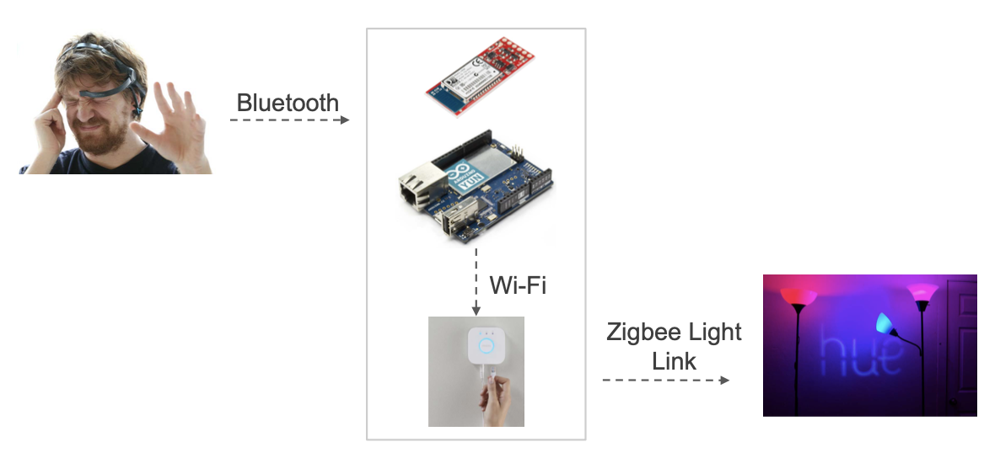
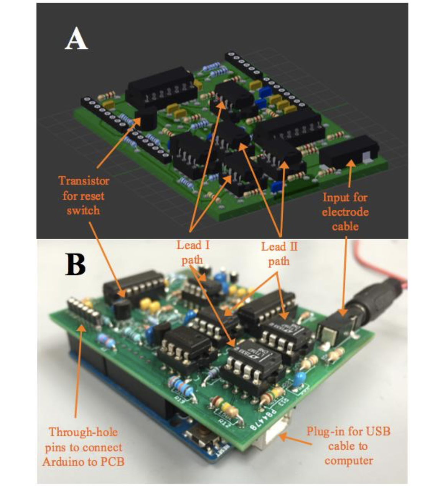

Software + ML
Pure the Journey Android App (Early Access) Released to Google Play Store
January 1, 2021
Available Here (only available to people on the beta tester list)This is an app version of the book, Pure The Journey, by Dave and Robin Weidner.

Latent Factor Models for Movie Recommender Systems
December 16, 2016
Developed a lab that utilizes the MovieLens dataset (100,000 ratings from 1000 users on 1700 movies) to train two different movie recommender system models. The lab focuses on introducing collaborative filtering, as well as implementing and comparing two methods for model based-collaborative filtering, SGD and ALS.
3D Data Visualizations
2017-2021
Many projects developing 3D data visualizations and studying patterns in the data
Mechatronics + IoT
Python-based Robotic Dynamometer
2017-2021
Automated a couple of robotic "dynos" to manipulate equipment and measure torque; complete with custom GUI

Resistance Engine
2018
Designed stepper motor-based resistance control system for cardio fitness equipment
IoT Rep Detector
2019
Sensor-based slam ball wall rep quantification and detection with local display & wireless leaderboard (using MQTT)
Mind-Controlled Lights
May 2016
Used an EEG sensor (NeuroSky MindWave Mobile) to control Philips Hue light bulbs.
How it Works?
The brain emits electrical impulses (voltage spikes) when neurons fire. EEG sensor reads voltage levels in time domain, transforming them to frequency domain. The NeuroSky algorithm calculates attention and meditation scores on a scale. The Yun is configured to read and parse attention and meditation scores from the MindWave Mobile and also to control the Hue.
Hardware
ECG Shield for Arduino to Measure Heart Rate
December 2015
Used EAGLE to design a portable, low-cost electrocardiogram (ECG) shield for the Arduino. Comes complete with a LabVIEW interface to view a person's heart rate in real time.
Accelerometer-based Angle Sensor
April 2020
Utilized two accelerometer ICs to do the hardware design/PCB layout for an angle sensor.